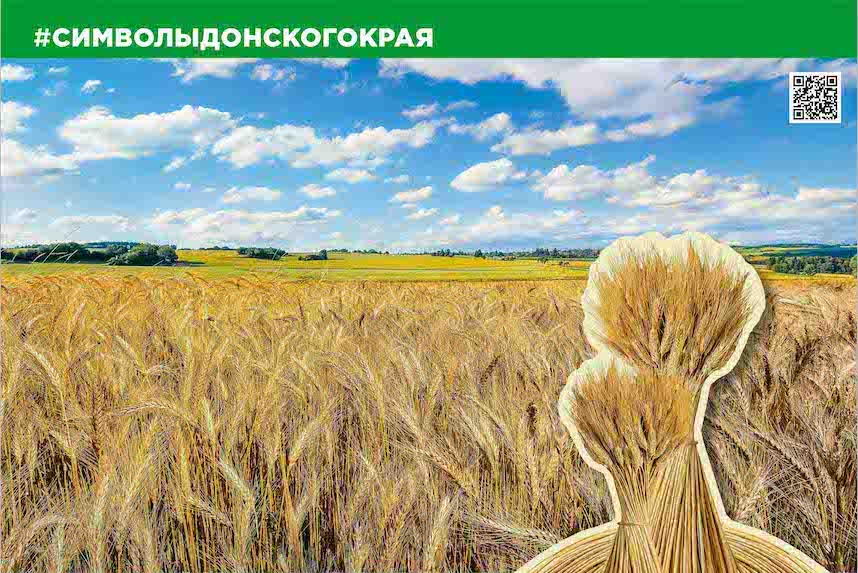

Донской край – это край степных просторов: бесконечные поля, покрытые волнами золотой пшеницы, наполненное зноем небо над ними, и спокойная гладь небольших рек. Это серебряная ширь Дона, вливающая свои воды в окруженную крутыми глинистыми берегами чашу Таганрогского залива.
Море травы, которую колышет ветер, открытые просторы, где изредка виднеются кустарники на многие километры, вокруг ни единого деревца, равнина, ограниченная линией горизонта и небом – это и есть Донские просторы.
Степная растительность хорошо приспособлена к жаре и засухе. Флора Донская края насчитывает более 3 тысяч видов растений и грибов.
Степь, на первый взгляд, большую часть года монотонна, блёкла, не радует глаз. Весной степь волшебным образом превращается в таинственный мир трав: пёстрые ковры тюльпанов, касатиков, чабреца, сиреневые стебли шалфея, белые шапочки степного лука, подорожник, серебрится цветущий ковыль, переливаясь от лёгкого ветерка, лазоревые островки мелькают то там, то здесь. Здесь же полынь, отдающая горечью. Всё это цветёт, выделяет свои ароматы.
Упадёшь в это душистое разнотравье, вдыхаешь его аромат, и, кажется, что сама земля даёт тебе свои силы. А вокруг тебя воздух звенит от громких и тихих, радостных и тоскливых, мелодичных и резких звуков. Полевые сверчки, кузнечики, пчёлы, шмели, комары и мошки деловито снуют туда-сюда. Степь живёт своей жизнью.
Необозримые просторы, покрытые золотистой пшеницей, миллионы подсолнечников, сладкие арбузы и дыни, табуны лошадей, отары овец, стада коров. Степи привлекательны, богаты природными ресурсами.
В степном пейзаже есть свое очарование, которое доступно только тому, кто здесь родился и постоянно испытывал на себе ощущение восторга в пору весеннего цветения станичных садов и звона первой зелени прибрежных рощ или месяцы суровых зим и осенних дней.
Художники же видят донскую степь то яркой и пестрой, то мелодичной, завораживающей своей красотой. Некоторые видят её спокойной, таинственной и загадочной. Все, безусловно, видят степь по-разному. Картины, изображающие степь, не могут быть одинаковыми, однообразными, но соединяет их все дух степи, такой непредсказуемый, но всё же для каждого человека такой родной.